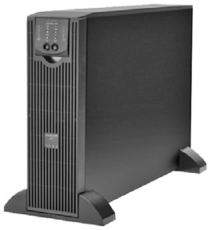
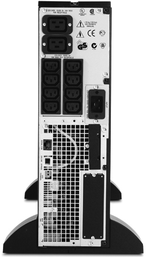

Sistemes d'alimentació ininterrompuda
Els pneumàtics que porta un vehicle motoritzat tenen les característiques adequades per garantir-ne la seguretat i el desplaçament. Segons les característiques que tingui un vehicle, caldrà utilitzar uns pneumàtics o uns altres. No és el mateix un turisme particular que un cotxe de competició de ral·lis. Per tant, tampoc no utilitzaran el mateix model de pneumàtics.
Cada model de pneumàtic ha de tenir una pressió concreta segons el model de cotxe. Si tenen poca pressió, la seguretat dels passatgers pot estar en perill. Quan el vehicle porta un cert sobrepès, es pot augmentar la pressió dels pneumàtics fins a un límit permès. Inflar-los fins a una pressió superior a la pressió límit també comportarà un risc per al vehicle i els ocupants.
D’una manera semblant, els sistemes d’alimentació ininterrompuda han de tenir les característiques adequades als equips a què es connectaran. No té cap sentit connectar un SAI de gamma alta a un ordinador personal d’un usuari domèstic. Tampoc no és normal utilitzar un SAI de gamma baixa en una habitació de servidors d’un centre de dades.
A més, un model de SAI té una capacitat limitada. Això vol dir que el nombre d’equips que s’hi connectin ha de consumir una potència inferior a la potència màxima que suporta el SAI. De la mateixa manera que no s’han d’inflar uns pneumàtics per sobre de la seva pressió límit, tampoc no s’ha de posar una càrrega superior a la càrrega màxima que un SAI pot gestionar.
A més, també hi ha dispositius de SAI amb diferents funcionaments i topologies que cal conèixer per tal de poder fer una bona elecció de l’equip.
Un altre aspecte important a l’hora de l’aplicació dels SAI és la relació entre la càrrega i l’autonomia, factors determinants en l’elecció d’un model concret. També cal tenir en compte la capacitat d’un SAI i la influència del nombre d’equips que s’hi poden connectar (càrrega). Caldrà calcular la potència que consumeixen els equips per escollir el model de SAI més adient.
Alteracions del subministrament elèctric
Els ordinadors necessiten que el seu aliment, l’electricitat, els arribi de manera constant i de la manera més pura possible. Una pèrdua sobtada de corrent elèctric produeix l’acabament immediat de qualsevol activitat informàtica. Aquests talls sobtats poden malmetre el maquinari i produir pèrdues de dades amb una importància vital.
A banda de les apagades elèctriques, el subministrament elèctric pot presentar altres problemes que poden fer malbé els equipaments informàtics:
- Sobretensions: quan el voltatge de la línia és més gran del que hauria de ser.
- Baixades de tensió: quan el voltatge de la línia és més petit del que hauria de ser.
- Variació de la freqüència: quan la freqüència del senyal elèctric és diferent de la que hauria de ser (50 Hz a Europa).
Sobretensions
Els dispositius elèctrics i electrònics, com els ordinadors, estan dissenyats per treballar amb un voltatge o tensió màxima concrets. Si un dispositiu rep un voltatge superior al màxim permès, efecte conegut com a sobretensió, pot patir danys i desperfectes que n’impedeixin el funcionament correcte.
Per exemple, si tenim un díode electroluminescent (LED) que emet llum quan rep una tensió d’1,35 volts i suporta un màxim d’1,6 volts i el connectem directament a dues piles d’1,5 volts, el díode rebrà 3 volts de tensió elèctrica i es fondrà a l’instant. D’una manera similar, altres aparells elèctrics poden deixar de funcionar o fins i tot cremar-se si reben una sobretensió.
Hi ha dos tipus de sobretensions: les permanents i les transitòries, depenent de la durada que tinguin. Les més habituals són les sobretensions transitòries (figura), que duren pocs nanosegons.
Tot i la seva curta durada, una sobretensió transitòria prou elevada pot malmetre igualment un aparell elèctric.
Les sobretensions transitòries són causades principalment per:
- Apagades elèctriques
- Llamps
- Curtcircuits
- Mals funcionaments causats per la companyia elèctrica
- Alteracions del flux de corrent de la línia elèctrica produïdes per altres equipaments (grans motors, aires condicionats…)
Un descarregador de sobretensió (surge suppressor) és un aparell que protegeix els dispositius elèctrics de les sobretensions transitòries (figura). Hi ha descarregadors de sobretensió amb múltiples preses de corrent que permeten connectar diversos dispositius alhora.
No tots els endolls amb múltiples preses de corrent porten un descarregador de sobretensió. Si no indiquen aquest tipus de protecció simplement serveixen per a subministrar el corrent elèctric.
Els descarregadors de sobretensió ofereixen una primera mesura de protecció elèctrica a un preu econòmic i, per aquest motiu, es connecten sovint a equips d’usuaris com ordinadors personals, impressores, monitors, etc. Per protegir amb més robustesa equips informàtics d’importància cabdal s’utilitzen sistemes d’alimentació ininterrompuda que combinen diverses mesures de protecció elèctrica.
Els llamps...
… poden provocar sobretensions tan altes que els descarregadors de sobretensió no puguin filtrar. Per tal d’augmentar-ne la protecció, els usuaris han de desendollar els ordinadors quan no s’utilitzen o en cas de tempesta.
Baixades de tensió
Baixades de tensió
Per a l’equipament informàtic, les baixades de tensió són menys serioses que les sobretensions. La majoria d’equipament elèctric tolera fluctuacions de corrent més aviat grans.
Quan un gran motor s’engega consumeix una gran quantitat de corrent elèctric de cop. Això fa que es redueixi el flux elèctric per a altres dispositius connectats a la mateixa línia. Llavors es produeixen baixades de tensió momentànies.
Els reguladors de voltatge són circuits electrònics que mantenen un nivell de voltatge en una línia elèctrica. Eliminen sobretensions però també baixades de tensió. Un mòdul regulador de voltatge (VRM, voltage regulator module) és un regulador de voltatge contingut en una unitat reemplaçable.
Sistemes d'alimentació ininterrompuda
Avui en dia aturar temporalment un o més servidors informàtics pot comportar fortes pèrdues econòmiques en alguns casos. Si l’aturada és causada per una apagada elèctrica, també hi ha el risc que parts del maquinari s’espatllin. En aquest darrer cas, el temps per tornar a posar a punt les màquines afectades s’incrementa encara més, ja que s’han d’aconseguir peces noves i canviar-ne les malmeses.
- 
- SAI de la companyia APC (part davantera)
Una solució al possible tall sobtat de corrent elèctric és utilitzar un o més sistemes d’alimentació ininterrompuda, coneguts com a SAI (UPS en anglès, uninterruptible power supply). Aquests equips asseguren una alimentació elèctrica continuada, encara que es produeixin talls de llum. A més, els SAI garanteixen una bona qualitat del corrent elèctric que arriba als aparells.
Els SAI disposen d’una o més bateries per subministrar l’electricitat als equips connectats. Generalment, també tenen altres elements que protegeixen de les alteracions del subministrament elèctric (sobretensions, baixades de tensió, soroll de línia, etc).
- 
- SAI de la companyia APC (part posterior)
Actualment, hi ha una gran varietat de models i fabricants de SAI, des de petits, senzills i econòmics, per a ordinadors personals; fins a grans, complexos i costosos per a centres de processament de dades. Depenent del fabricant i del model del SAI, s’obtindrà més o menys protecció de les alteracions del subministrament elèctric i/o una autonomia més gran o més petita.
Autonomia d'un SAI
En cas d’un tall de corrent, els SAI ofereixen un temps limitat de subministrament elèctric que pot oscil·lar entre els pocs minuts i algunes hores, depenent de la tecnologia del SAI i de la quantitat i de la mida de les bateries. Aquest temps extra serveix normalment per aturar les màquines d’una manera ordenada o per posar en marxa una font d’alimentació alternativa, com pot ser un grup electrogen.
Parts d'un sistema d'alimentació ininterrompuda
Per tal de poder verificar el funcionament dels sistemes d’alimentació ininterrompuda, cal conèixer les diverses parts i els components que tenen aquests aparells. En la taula es mostren algunes de les parts principals d’un SAI que apareixen típicament en les unitats de gamma baixa o per a petits negocis. Les unitats més grans ofereixen més característiques, però no són rellevants per als usuaris d’ordinadors personals.
| Component | Descripció |
|---|---|
| Circuits d’inversió i conversió | Encarregats de transformar el corrent altern de la línia principal a corrent continu per a les bateries i altre cop a corrent altern per als equips connectats. Aquests circuits es troben dins del SAI i no es veuen. |
| Bateria | Emmagatzema l’energia que utilitza el SAI per alimentar els equips connectats. La mida de la bateria determina, en gran part, la mida del SAI. A més, la mida de la bateria és proporcional a la quantitat d’energia que el SAI pot emmagatzemar i, per tant, de l’autonomia que tindrà. |
| Interruptor principal | Normalment, a la part frontal. Serveix per activar o desactivar el subministrament elèctric del SAI als equips connectats. Si s’apaga el SAI, aquests equips s’apagaran a l’instant però el SAI continuarà engegat, i carregarà la bateria mentre estigui endollat. |
| Connectors de corrent de sortida | Normalment, a la part posterior. Actuen com a endolls en què es connecten els equips informàtics que es volen protegir. Els SAI més cars poden tenir deu sortides d’aquest tipus o més. |
| Indicadors d’estat | Mostren l’estat actual del SAI. Hi ha indicadors visuals (LED) i auditius (alarmes). El nombre d’indicadors pot variar segons el model i el fabricant del SAI. Per saber què volen dir cadascun d’ells el més adient és consultar el manual corresponent. |
| Programes de control i monitoratge | Actualment fins i tot les unitats de gamma baixa porten programari per obtenir informació acurada de l’estat del SAI. A més del programa, cal un cable que connecti el SAI amb l’ordinador en el qual apareixeran les dades en forma gràfica. |
Indicadors d'estat
Els indicadors d’estat d’un SAI en permeten verificar ràpidament el funcionament. En la figura es mostren alguns dels indicadors més comuns d’un SAI.
- De línia (online): quan està encès indica que la unitat funciona amb corrent de la línia elèctrica. Per a un SAI de tipus standby, aquest és el mode normal d’operació.
- De bateria (on battery): si està encès indica que el SAI funciona amb l’energia de la bateria.
- Sobrecàrrega (overload): aquest indicador s’il·luminarà quan es connectin més equips dels que el SAI pot gestionar. Així, doncs, caldrà disminuir el nombre d’equips connectats o augmentar la capacitat del SAI, si és possible.
- Substituir bateria (replace battery): el SAI comprova periòdicament l’estat de la bateria. Quan la bateria estigui malament, el LED s’il·luminarà i indicarà que cal substituir-la.
Alguns SAI...
… il·luminen l’indicador de substituir la bateria quan aquesta està baixa perquè s’ha descarregat durant una apagada elèctrica. És recomanable intentar carregar la bateria endollant el SAI a la línia principal abans de concloure que s’ha de llençar la bateria.
Com que no és habitual estar mirant els indicadors lluminosos contínuament, alguns SAI disposen d’indicadors auditius per avisar de possibles problemes. El nombre de sons que es produeixen poden significar coses diverses. Consultant el manual en podrem esbrinar el significat exacte.
Programes de control i monitoratge
Els indicadors lluminosos d’estat donen la informació mínima necessària per detectar si tot va bé o si hi ha algun problema. Per obtenir informació extensa molts SAI porten programes que mostren encara més dades en format gràfic mitjançant quadres de diàleg (figura).
Per obtenir tota aquesta informació cal instal·lar en un ordinador el programa que subministra el fabricant i connectar aquest ordinador al SAI amb un cable. Els SAI més antics tenien ports en sèrie, però actualment s’utilitza més sovint el port USB.
El programari de control d’un SAI varia en funció del model i del fabricant però, en general, inclou funcionalitat en les categories següents:
- Estat: es mostra informació de l’estat actual com la càrrega actual de la bateria, la càrrega d’equips connectats, les condicions ambientals (humitat, temperatura, etc.) i les característiques elèctriques del corrent d’entrada i de sortida.
- Registre (logging): es manté un diari dels esdeveniments que es van donant: interrupcions de corrent, comprovacions rutinàries, etc.
- Diagnòstic: permet fer diverses comprovacions al SAI o planificar-les per a més endavant.
- Alarmes PC: permet configurar que s’enviïn notificacions a l’ordinador al qual està connectat el SAI quan apareguin problemes o que es canviï al mode en bateria.
- Apagada automàtica: en cas de fallada elèctrica, el SAI pot enviar les instruccions adients perquè l’ordinador es tanqui d’una manera segura, que tanqui els programes oberts i també el sistema operatiu.
Tipus de sistemes d'alimentació ininterrompuda
De manera genèrica, els SAI es classifiquen en dos tipus: els que treballen de manera continuada (online) i els que treballen només quan detecten un tall de corrent (offline). Dins de cadascuna d’aquestes categories hi ha diferents dissenys o topologies de SAI.
SAI standby
El SAI standby o de reserva és de tipus offline (figura). Això vol dir que, en mode normal, la bateria del SAI no subministra corrent elèctric als equips connectats, ja que aquests s’alimenten de la línia principal.
L’inversor converteix el corrent continu en corrent altern.
El carregador de la bateria també pren el corrent de la línia principal per carregar la bateria. La bateria i l’inversor estan a l’espera (standby) fins que no se’ls necessiti. Quan hi ha un tall a la línia principal, l’interruptor de transferència canvia i activa la font d’alimentació secundària, és a dir, la bateria. Si el subministrament elèctric principal torna, l’interruptor de transferència canvia de posició i el SAI torna a l’estat anterior.
Els SAI standby s’utilitzen per a ordinadors personals, són de mida reduïda, tenen poca autonomia i són força econòmics.
Els SAI standby són de gamma baixa i tenen l’inconvenient que des que se’n va la llum fins que s’alimenta l’ordinador amb la bateria passa un interval de temps breu, de l’ordre d’una fracció de segon. Aquest temps, anomenat temps de transferència, és prou petit perquè no s’apagui l’ordinador connectat, però la situació ideal és aquella en què els aparells connectats reben un flux continu de corrent tant si hi ha apagades elèctriques com si no.
SAI interactiu de línia
Els SAI interactius de línia també són de tipus offline, tot i que tenen un disseny totalment diferent del dels SAI standby (figura). El carregador de bateria, l’inversor i el selector de la font de corrent es troben ara en l’inversor/convertidor. La línia de corrent altern és encara la font d’alimentació principal i la bateria, la secundària. Quan la línia elèctrica funciona, l’inversor/convertidor carrega la bateria, quan hi ha una apagada, aquest funciona a la inversa i obté l’energia de la bateria per alimentar els ordinadors connectats al SAI.
L’avantatge principal d’aquesta topologia és que l’inversor/convertidor està sempre connectat a la sortida, alimentant l’ordinador. Això permet una resposta més ràpida en cas d’una fallada elèctrica que un SAI standby. Tot i això, el SAI interactiu de línia encara presenta un temps de transferència i no ofereix una protecció tan bona com un SAI de tipus online.
Els SAI interactius de línia s’utilitzen en petites empreses, servidors web i servidors de departaments.
SAI online
El gran avantatge dels SAI de tipus online és que no tenen temps de transferència en cas de fallada elèctrica (figura). L’ordinador sempre rep l’alimentació de la bateria, tant si hi ha una apagada com si no.
L’esquema del SAI online s’assembla al del SAI standby però la gran diferència és que el recorregut del corrent elèctric passa sempre per baix, de la font principal fins a l’ordinador, passant per la bateria. En el cas del SAI standby, el camí era per dalt. Quin sentit té, doncs, la línia discontínua de la figura? Aquesta línia secundària s’utilitza només si es produeix una fallada en l’inversor o apareix algun altre problema en la línia principal. Si no fos així es podria donar el cas que, tenint subministrament elèctric de la línia principal, els ordinadors no rebessin corrent elèctric.
Els SAI online...
… són més cars, de mida superior i amb autonomies més llargues. S’utilitzen per a grans servidors i en centres de dades.
Aplicació dels sistemes d'alimentació ininterrompuda
Hi ha diversos factors que cal tenir en compte abans d’adquirir i d’instal·lar un SAI: la mida que té, el tipus de SAI, la càrrega que suporta, el grau de protecció contra les alteracions del subministrament elèctric, etc. Depenent del cas, escollireu un model o un altre tenint en compte el nombre i el tipus d’ordinadors que vulgueu protegir.
Relació entre càrrega i autonomia
Tres de les característiques més rellevants d’un SAI són la càrrega, l’autonomia i la capacitat, conceptes que estan relacionats entre ells.
La càrrega d’un SAI és el conjunt d’equips que té connectats.
L’autonomia d’un SAI és la quantitat de temps que podrà subministrar energia de la bateria a una càrrega concreta.
La capacitat d’un SAI és la potència màxima que podrà subministrar a la seva càrrega.
La capacitat de potència de sortida dels SAI s’expressa amb dos valors diferents. Per exemple, una capacitat de 330 W/700 VA per a un model concret.
La potència aparent és la que subministra el SAI cap a la càrrega i sempre apareix en voltamperes (VA). La potència real és la que consumeix realment la càrrega i sempre apareix en watts (W).
Si connecteu més ordinadors a un SAI, n’augmentareu la càrrega i disposareu, per tant, de menys autonomia. En la taula podeu observar el quadre d’autonomies d’un SAI concret.
| Càrrega (VA) | Autonomia (minuts) |
|---|---|
| 80 | 43 |
| 160 | 22 |
| 320 | 9 |
| 480 | 4 |
Per tant, per a un mateix SAI, depenent de la càrrega que hi assigneu tindreu més o menys temps de subministrament extra. En la taula podeu veure com amb una càrrega de 480 VA (87% de la capacitat) només tindríeu quatre minuts d’autonomia. Caldria valorar si és prou temps per dur a terme les accions posteriors pertinents.
Cal tenir en compte que la potència que necessita la càrrega no pot excedir la capacitat d’un SAI. Si fos així, el SAI patiria una sobrecàrrega i deixaria de funcionar.
Elecció dels SAI que cal utilitzar
Per saber quin és el SAI més adequat per a cada cas, s’han de tenir clares les qüestions següents:
- Quina serà la càrrega que haurà de suportar?
- Quanta autonomia voldrem tenir?
- De quant espai disposem per ubicar el SAI?
Càlcul de la capacitat necessària
Quan sapigueu quins equips haureu de protegir de les apagades elèctriques podreu calcular la potència real que necessiten (en watts). En la documentació respectiva o en els mateixos aparells que s’han de protegir normalment s’indica el consum en watts que tenen. Així, doncs, caldrà que sumeu els consums de tots els equips que connectareu al SAI (ordinadors, encaminadors, monitors…) i obtindreu, així, la càrrega total necessària.
Cal tenir en compte que haureu calculat la potència real i en cap cas no heu de confondre el valor obtingut amb la potència aparent, mesurada en voltamperes. Normalment, els fabricants indiquen les capacitats de cada SAI de les dues maneres: potència real / potència aparent.
Per exemple, un SAI amb capacitat de 300 W / 500 VA no serviria si la càrrega que necessitem és de 400 W. Aquí, l’error habitual seria prescindir de les unitats i confondre les potències per acabar concloent erròniament que, com que 400 no arriba a 500, el SAI seria vàlid per al nostre propòsit.
Autonomia volguda
Els SAI ofereixen un temps extra d’energia en cas de fallades elèctriques. Heu de tenir clar quines accions es duran a terme quan això passi. Depenent del que calgui fer, caldrà una autonomia superior o inferior.
En molts casos, amb una autonomia de pocs minuts n’hi ha prou per poder apagar els equips connectats d’una manera segura i ordenada. A més, amb el programari que ve amb la majoria dels SAI, això es pot programar per endavant i fer-se d’una manera automàtica, sense necessitat de cap intervenció humana (cosa que s’agraeix si el tall de llum es dóna a les dues de la matinada, per exemple).
En altres casos, l’autonomia haurà de ser superior per altres motius. Un possible exemple seria el de mantenir engegat un servidor que fa operacions crítiques. Si no es disposa d’un grup electrogen que subministri energia alternativa, caldrà que el SAI disposi d’una autonomia de diverses hores (la qual cosa implicarà un cost molt elevat).
Ubicació dels SAI
Un darrer aspecte que cal tenir en compte és on situarem el SAI en qüestió. Cal disposar d’espai a prop dels equips que s’han de protegir i amb unes condicions ambientals determinades (indicades en les especificacions de cada model).
Hi ha models de SAI que generen molta calor a causa de la càrrega continuada de les bateries i de la pèrdua energètica que es produeix en aquest procés i en altres processos elèctrics. Depenent de la quantitat de bateries o de la càrrega que tingui el SAI, la temperatura pot pujar en major o menor mesura. Si l’habitació on es troba està climatitzada com cal, s’evitaran escalfaments no volguts que poden malmetre el maquinari.
Els cables d’alimentació que es connecten al SAI han d’estar ben recollits i s’han d’evitar possibles cables enmig del pas o que pengin de qualsevol manera.